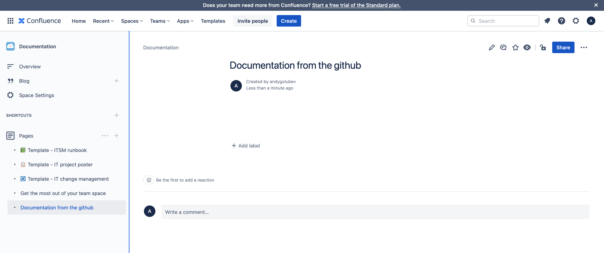
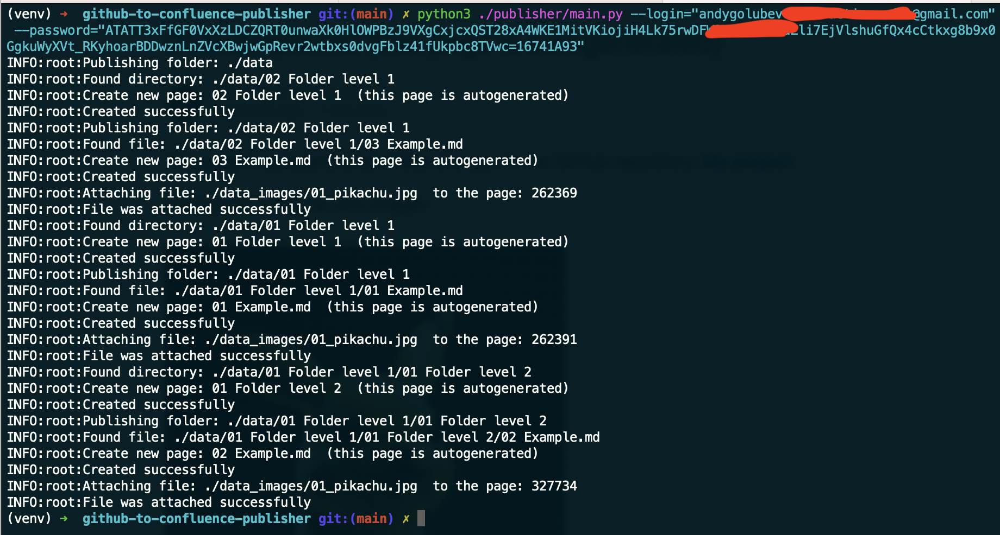
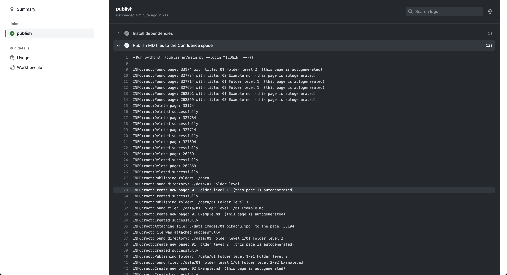
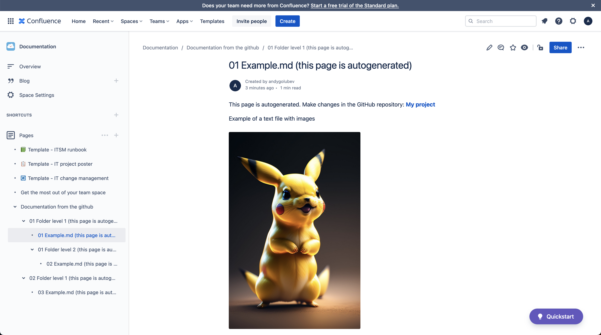
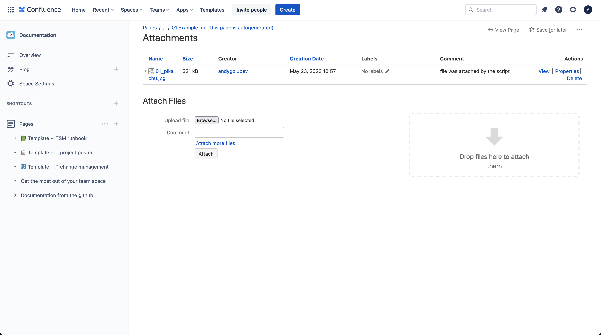
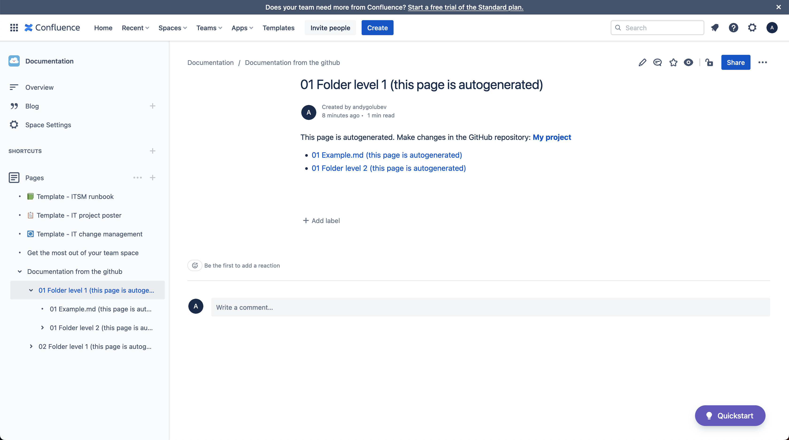

Managing documentation across different platforms can be a time-consuming task, especially when it involves converting and uploading files manually. However, with the GitHub to Confluence Publisher tool, you can automate the process of publishing Markdown files from GitHub to Confluence effortlessly. This script simplifies the conversion of Markdown files into Confluence markup and streamlines the uploading process to your Confluence space. In this article, we will explore the setup, configuration, and functionality of the github-to-confluence-publisher tool.
You can find all of my code in my GitHub repository: https://github.com/andygolubev/github-to-confluence-publisher
To get started, follow these steps to set up the github-to-confluence-publisher tool.
Before using the tool, you need to create a new domain in Confluence Cloud. You can do this by visiting the Atlassian website and accessing the domain creation page.
Within your Confluence Cloud domain, create a new space where you want to publish your documentation. Take note of the space's name and the parent page's ID, as you will need them for configuration later. Additionally, generate an API token for authentication purposes.
Open the config.yaml file in the publisher/config directory and update the following values with your specific information:
confluence_url: The URL of your Confluence REST API.
confluence_space: The name of the space you created earlier.
confluence_parent_page_id: The ID of the parent page within your space.
confluence_search_pattern: A search pattern used to identify autogenerated pages. It is recommended to use a random value to ensure proper deletion of autogenerated pages.
github_folder_with_md_files: The path to the folder containing your Markdown files on GitHub.
github_folder_with_image_files: The path to the folder containing your image files on GitHub.
My example config:
confluence_url: https://test-publisher.atlassian.net/wiki/rest/api/
confluence_space: Documentat
counfluence_parent_page_id: 262359
confluence_search_pattern: (this page is autogenerated)
github_folder_with_md_files: ./data
github_folder_with_image_files: ./data_images
Once you have completed the setup process, you can start using the github-to-confluence-publisher tool.
Initially, your Confluence space will be empty, as shown in the provided screenshot.
Running the publisher: Run the publisher script either locally or using GitHub Actions. The script will search for pages in your Confluence space that match the confluence_search_pattern and delete them.
Local run: If you choose to run the script locally, you will see a similar output to the "Local run" screenshot provided.
GitHub Actions: If you prefer using GitHub Actions, the process will be executed automatically, as shown in the "GitHub Actions" screenshot.
Populating the space: After running the publisher, the parent page will contain child pages with your content, as organized in your GitHub repository's folder structure. The child pages imitate folders and display the "Children Display" widget for easy navigation.
 Attachment management: The tool automatically attaches images from your GitHub repository to the respective Confluence pages, ensuring all the necessary visuals are included in the documentation.
The GitHub to Confluence Publisher tool simplifies the process of publishing Markdown files from GitHub to Confluence. By automating the conversion and uploading tasks, it saves time and effort, allowing you to focus on creating high-quality documentation.
You can find all of my code in my GitHub repository: https://github.com/andygolubev/github-to-confluence-publisher
Feel free to connect with me on LinkedIn: https://www.linkedin.com/in/andy-golubev/